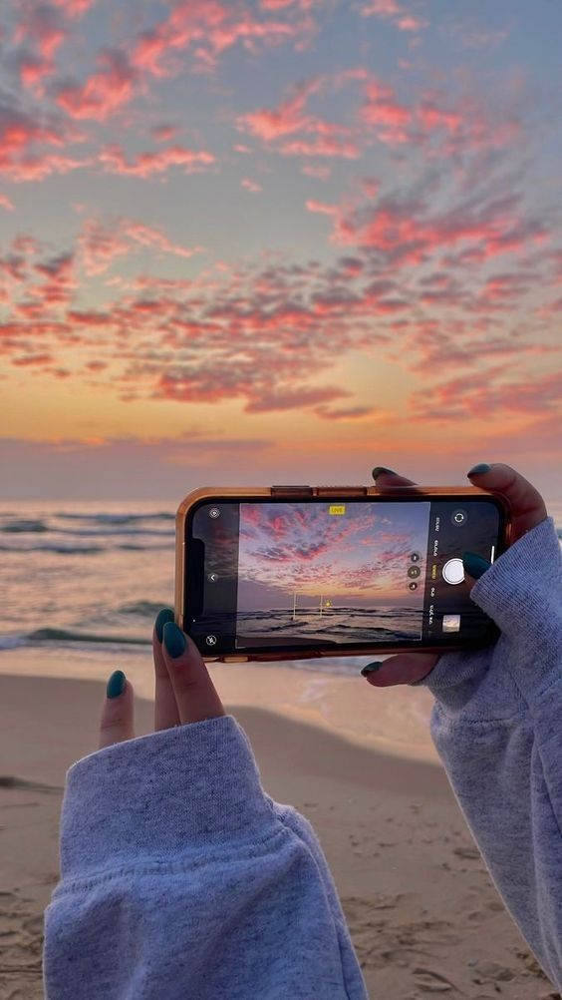

En este apartado comparto mis intereses digitales que son parte de mi vida diaria.
Programación Web
La programación web permite crear sitios interactivos e innovadores mediante tecnologías como HTML, CSS y JavaScript. Es una de las ramas con mayor crecimiento y creatividad en el mundo de la tecnología.

🔗 Enlace de interés: Aprende de la programacion web
🎥 Video relacionado:
Fotografia en redes sociales (o Digital )
La fotografia en redes sociales es una variante de la fotografia clasica que puede ser considerada mas accesible y universal ya que nada mas requieres un telefono y saber configurar tus fotos.

🔗 Enlace de interés: Aspectos de la fotografia
🎥 Video relacionado:
Plataformas de Musica
Las plataformas de streaming musical han transformado la industria discográfica al permitir el acceso a millones de canciones desde cualquier dispositivo conectado a internet. Gracias a sus algoritmos, recomiendan nueva música basada en nuestras preferencias cotidianas.
🔗 Enlace de interés: Visita Spotify para escuchar tus listas preferidas
🎥 Video relacionado: